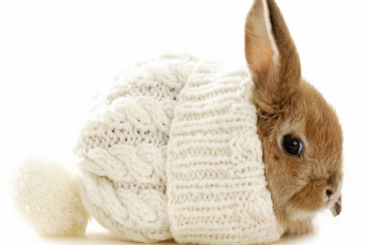
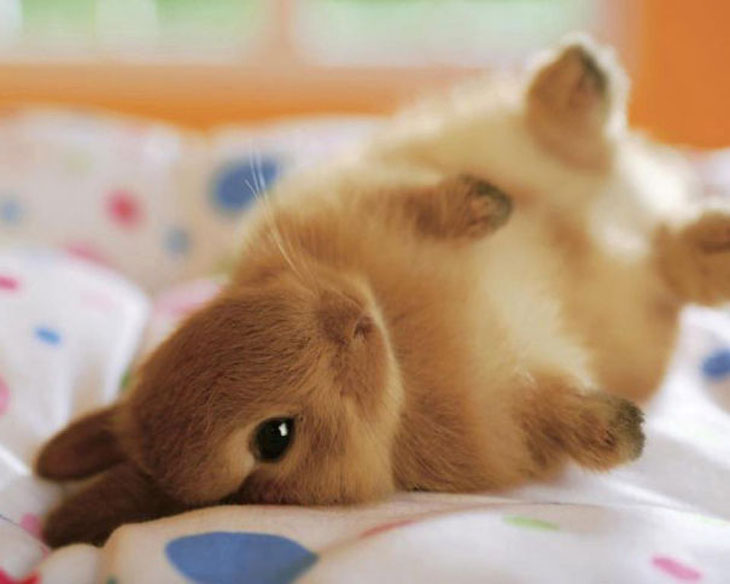
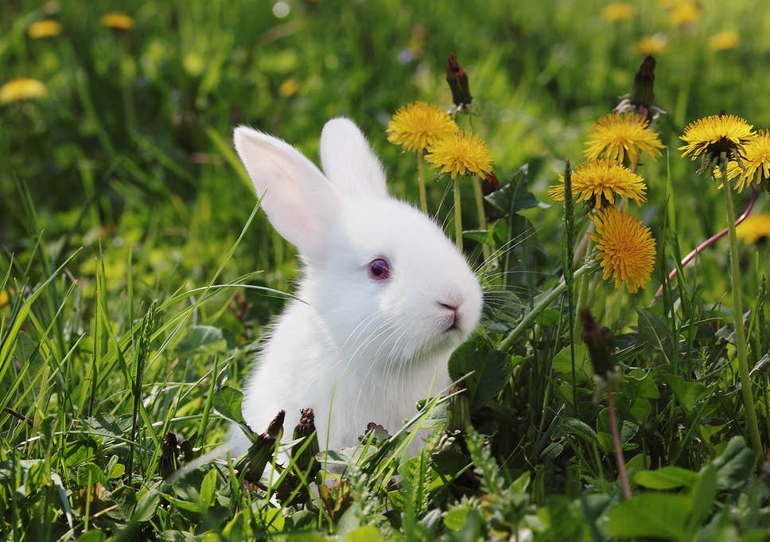
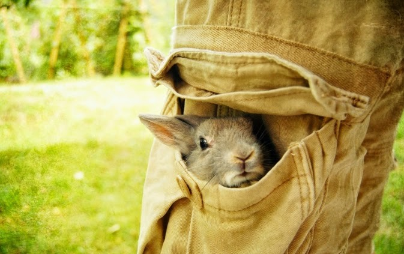
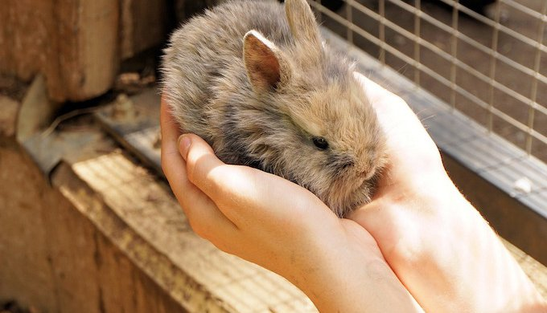

فهمیدن رفتار خرگوش ها راحت نیست چون حیوان خانگی خیلی ساکت و بی صدا و خجالتی ای هستن! ولی نشونه هایی هست که بهمون میفهمونه اونا چه احساسی دارن و چی میخوان بگن. در این مقاله با ما همراه باشید تا معنی برخی از رفتارهای عجیب خرگوش ها رو با هم رمز گشایی کنیم!

آیا خرگوش ها فکر میکنن؟
چیزایی که یه خرگوش درک می کنه خیلی عمیق تر از اون چیزایی که صاحبانشون در ابتدا تصور می کنن مغز اونا جوری کار می کنه که واقعا جالبه. خرگوش ها توانایی درک طیف گسترده ای از احساسات دارن که شامل:
- حسادت
- خشم
- ترس
- غم
- عشق
- بی حوصلگی
- تند مزاجی
- و احساس عدم امنیت میشه.
درک این موضوع که چی توی سر یه خرگوش می گذره کار سختیه و نیاز به این داره که رفتارشون رو مشاهده و درک کنیم. ما در مقاله انواع نژاد خرگوش در مورد گونههای مختلف خرگوش صحبت کردیم، اما رفتارها و زبان بدن همه خرگوش با هم یکسانه و مفهوم مشخصی را به ما میرسونه.
دوست داری خرگوشت رو تربیت کنی؟
تربیت خرگوش ها کاری لذت بخش و جالبه ولی هرکسی بلد نیست اون ها رو درست آموزش بده.
اون ها میتونن شیرین کاری هایی مثل پریدن از روی مانع، دست دادن، غلت زدن، رفتن توی قفس، دستشویی کردن در جای مشخص و کلی چیزهای دیگه رو یاد بگیرین به شرطی که درست آموزششون بدید، زبونشون رو بلد باشید و کاری کنید که بهتون اعتماد کنن.
اگر دوست دارید خرگوشتون رو آموزش بدید، ایبوک تربیت و دستی کردن خرگوش رو دانلود و مطالعه کنید.
این ایبوک آموزش و تربیت خرگوش ها نوشته شده. بخونش، به کارهاش عمل کن و ببین خرگوشت چه جوری با هوشش و مهارت های که یاد میگیره، شگفت زده ات میکنه🤩 کلی هم بازی در این کتاب یاد دادیم که با انجامشون از وقت گذرونی با خرگوشت کلی لذت میبری.

زبان بدن و معنی حرکات خرگوش ها
خرگوش ها نسبتا موجودات آرومی هستن و بعنوان حیوونایی که طعمه سایرین بحساب میان، بنفعشونه خیلی جلب توجه نکن!
با وجود این روش های منحصر بفردی برای بیان حسشون و برقراری ارتباط دارن.
خرگوشها منظورشون با رفتارهایی مثل جهش مخصوص به خودشون، مالیدن بینی و لم دادن می رسونن.
اینجا معنی بعضی از این رفتارها رو براتون توضیح دادیم:
پرش خاص خرگوش ها به چه معنی است؟
در این حالت به بالا می پرن و تو هوا بدنشون پیچ و تاب می دن و می چرخونن.
کسایی که با نگهداری و مراقبت از خرگوش آشنا نیستن ممکنه ندونن که اونا روش های نمایشی برای بیان هیجان و لذت دارن
- اونا می رقصن!
- می پرن!
- و توی هوا می چرخن و بدناشون پیچ و خم میدن!
- و لگد پرونی می کنن!!
در حین این پرش مخصوص، اونا واقعا تماشایین. بعضی وقتها اول می دون و بعد این پرش رو اجرا میکنن و در سایر مواقع بصورت ناگهانی این کار رو انجام میدن.
. چیزی که واقعا خنده داره اینکه وقتی این پرش با موفقیت انجام میشه یه نماش اکروباتیک هم روی زمین بدنبال داره.
باید بگم که هر کسی که فکر می کنه خرگوش ها موجوداتی کسل کننده و بی حالن قطعا یه خرگوش در حال انجام یکی از این پرش های مخصوص رو ندیده!

چرا گاهی خرگوش ها با سرعت بالا میدوند؟
وقتی خرگوش ها با سرعت خیلی زیادی میدون و گرد و خاک بپا می کنن در حال اجرای این حرکت هستن. در این حالت دور اتاق می چرخن. این انفجار سرعتی گاهی با پرش مخصوصشون که همراه با چرخوندن و پیچ و تاب دادن بدنشون در هواست و اوج هیجان، ترکیب میشه.
هر وقت که میخواین یه خوراکی خوشمزه به خرگوشتون بدید انتظار این حرکت رو داشته باشین!
فهمیدن احساسات خرگوش ها براساس حرکاتشون
در ادامه چند تا حرکت رایج خرگوشها رو بهتون معرفی میکنیم که با استفاده از اونا احساساتشون رو به ما نشون میدن. با یادگرفتن معنی این رفتارها میتونید بفهمید که خرگوشتون خوشحاله، راضیه یا برعکس از زندگیش ناراضیه.
۱. علت دراز کشیدن خرگوش به پهلو
وقتی یه خرگوش خوشحال و راضیه خیلی راحت از پهلو روی زمین ولو میشه. گاهی این دراز کشیدن مراحله به مرحله پیش میره و در مرحله اول خرگوش قبل از ولو شدن کامل چندبار سرش رو به اطراف می چرخونه.
اگه خیلی دوست دارین خرگوشتون رفتارایی رو انجام بده که نشونه خوشحالی و رضایتش باشه، باید براش وقت بزارین. بهتون پیشنهاد میکنیم مطلب چگونه خرگوش خود را شاد کنیم؟ رو بخونین تا با یاد گرفتن چندکار کوچیک به راحتی حیوونتون رو خوشحال کنین.

۲. لیس زدن خرگوش نشانه چیست؟
علت لیس زدن خرگوش ها ابراز علاقه و نشون دادن احساسات به طرف مقابلشونه. خرگوش ها عواطفشون رو با لیس زدن نشون میدن.
معمولا میبینین یک جفت خرگوش هم دیگه رو لیس میزنن و تمییز می کنن؛ این نشون میده پیوند عاطفی قوی بین اوناست.
پس اگر خرگوشتون شما رو لیس زد نگران نباشید، داره بهتون ابراز علاقه میکنه و دوستتون داره!
۳. تولید یه صدای ضعیف شبیه وزوز
یه خرگوش هیجان زده در حین پریدن به هوا ممکنه از خودش این صدا رو دربیاره که نشون دهنده شادیه.
در ضمن وقتی دوربر خرگوش دیگه ای هم هست ممکنه این کار رو انجام بده که در این حالت این صدای خرگوش می تونه نشونه هیجان جنسی باشه.

۴. دندون قروچه کردن خرگوش و معنی اون
جالبه بدونید وقتی یه خرگوش رو نوازش می کنین ممکنه لذت بردنش رو با دندون قروچه کردن نشون بده.
دندون قروچه کردن خرگوش معادل صدای مخصوص خرخر گربه هاست که در حال آرامش از خودشون در میارن.
البته دندون قروچه می تونه نشونه ناراحتی یا درد هم باشه. دندون قروچه ای که در اثر درده نسبت به اونی که در اثر خوشحالیه طولانی تره و بیشتر هم تکرار میشه.
از روی رفتارهای دیگه که همزمان با این کار مشاهده می کنین می تونین تفاوت دو تا دندون قروچه رو از هم تشخیص بدین.
- برای مثال اگه خرگوش پاهاش رو با آرامش دراز کرده و خوابیده و دندون قروچه می کنه، نشونه رضایته.
- ولی اگه در حالیکه خودش رو جمع کرده و مضطربه، دوست نداره حرکت کنه یا غذا بخوره و رفتارهای پرخاشگرانه از خودش نشون میده دندون قروچه بکنه، علامت درده.
برای اطمینان از سلامتی خرگوش و نحوه نگهداری اون، مقاله نگهداری خرگوش رو مطالعه کنید.

۵. غرغر کردن خرگوش به چه معنی است؟
غرغر کردن و خرناس کشیدن نشونه اینه که خرگوشتون از چیزی عصبانی یا مضطربه.
مثلا ممکنه بی اجازه وارد قلمروش شده باشین که در این حالت داره بهتون میگه «گمشو بیرون!»
رفتارهای پرخاشگرانه خرگوش می تونه دردسرساز باشه پس بهتره مواظب باشین.
۶. جیغ زدن خرگوش نشانه چیست؟
خرگوشها به طور طبیعی اهل جیغ زدن نیستن و این رفتار رو فقط در مواقع خاصی نشون میدن. بطور کلی خرگوش فقط موقع مردن یا وقتی درد شدیدی داره جیغ می زنه، پس اگه چنین اتفاقی افتاد فورا به کلینیک دامپزشکی ببریدش.

۷. لگد زدن یا جفتک پروتی
یه خرگوش دلخور ممکنه موقع دور شدن ازتون عمدا لگد بزنه.
در حیات وحش این کار برای پرتاب کردن خاک و خل به صورت حیوانات دیگه انجام میشه.
مثلا انتظار داشته باشین بعد از کوتاه کردن ناخن های خرگوشتون از دستتون دلخور بشه و خاک و گل خیالی بهتون پرتاب بشه.
۸. مالیدن چانه
وقتی خرگوش چونهش رو به چیزی می ماله داره میگه «این مال منه!»
چونه خرگوش ها غدد تراوشی داره که بوی خاصی ایجاد می کنن. بخاطر همین اونا برای علامت گذاشتن قلمروشون چونهشون رو به چیزهای مختلف می مالن.

۹. مالیدن بینی توسط خرگوش
خرگوش ها محیط اطرافشون رو با بو کردن و مالیدین بینیشون به چیزهای مختلف شناسایی می کنن.
این کار ممکنه یه خوش آمدگویی یا اولین مرحله تحقیقاتشون باشه؛ درعین حال می تونه نشونه پررویی و سلطه طلبی هم باشه. در این صورت اگه خرگوشتون بینیش رو بهتون مالید شاید داره بهتون میگه: «از سر راهم برو کنار! مزاحممی!»
گاهی وقتها هم مالیدن بینی برای جلب توجهه و دلیلش اینه که به اندازه کافی نوازشش نمیکنین. در این صورت اگه به این کارش اهمیت داده نشه تلاش برای جلب توجه رو با گاز گرفتن ادامه میده.
۱۰. چرا خرگوش زمین را میکند؟
وقتی خرگوش عملی مثل کندن زمین روی پاهاتون یا روی کف خونه انجام میده نمایش راه دیگهای برای جلب توجه شماست.
در این حالت داره میگه: «نوازش کردن من اهمیت بیشتری از یه تماس تلفنی مهم داره!»

۱۱. گاز گرفتن خرگوش نشانه چیست؟
خرگوش ها در اغلب مواقع برای جلب توجه گازهای کوچیک می گیرن و قصدشون صدمه زدن بهتون نیست. ولی این کار برای ما آزار دهنده است؛ پس بهتره جلوی این کارشو بگیرید.
هر بار که گازتون گرفت جیغ بلندی بکشین تا بفهمه که دارید درد میکشین. این کار باعث میشه گاز گرفتنها آرومتر و کمتر بشه و در نهایت این رفتار کاملا از بین بره.
ولی گاهی هم خرگوش ها با خشونت گاز می گیرن! این رفتار میتونه به این دلیل باشه که دارید جای حساسی از بدنش رو نوازش میکنید یا رفتاری کردید که احساسات قلمروطلبیش رو تحریک کردین.
البته رفتارهای پرخاشگرانه با عقیم کردن خرگوش نر و ماده کم میشه.
۱۲. علت پا کوبیدن خرگوش
خرگوشها در طبیعت وقتی احساس خطر میکنن پاهای عقبشون رو به زمین میکوبن؛ انگار که دارن زمین رو میکنن.
این کار یه علامت خطر برای بقیه خرگوشهاییه که در اون حوالی وجود دارن.
۱۳. دلیل خوردن مدفوع توسط خرگوش چیه؟
حقیقت جالب در مورد خرگوشها اینه که ۲ نوع مدفوع تولید میکنن.
- یه مدفوع سفت، پلت مانند و تیره رنگ که کف قفس اون رو میبینید
- یه مدفوع نرم و شیری رنگ که از مقعد خرگوش ترشح شده و مستقیما توسط اونها خورده میشه (روی زمین نمیریزه) که بهش «سکوتروف» میگن. خرگوش ها این مدفوع رو که در واقع ماده غلیظی حاوی مواد مغزی تولید شده توسط باکتری های روده است رو میخورن و خیلی هم براشون مفیده!
پس اگه خرگوشتون مدفوع سفت و تیره رنگ کف قفس رو میخوره میتونه نشانه بیماری یا کمبودهای تغذیهای باشه و بهتره سریعا با دامپزشک تماس بگیرید.

چگونه خرگوش را نوازش کنیم؟
خرگوشها از نوازش شدن لذت میبرن؛ اما باید روش درست نوازش خرگوش رو بلد باشیم و بدونید کجای خرگوش را نوازش کنیم!
- نوازش کردن پیشونی، بالای سر و پشت خرگوشها به این کوچولوها لذت زیادی میده.
- همیشه حواستون باشه که در جهت رویش موها خرگوش رو نوازش کنید؛ نه برعکس!
- اکثر خرگوش ها لمس و نوازش کردن پشت گوشهاشون رو هم دوست دارن.
اگه خرگوشتون عاشق نوازش شدنه میتونید از این موضوع استفاده کنید و با استفاده از برس گربه یا یه برس کوچولو موهای بدنش رو شونه کنید. اینطوری هم نوازشش میکنید و هم موهای اضافه رو از بدنش جمع میکنید و از تشکیل گلولههای مویی پیشگیری میکنید.
البته خرگوشها چند نقطه حساس دارن که اصلا از نوازش و لمس اون قسمتها خوششون نمیاد.
این نواحی حساس عبارتند از:
- زیر چانه
- سبیلها
- پاها
- البته بعضی از خرگوشها به دمشون و گوشهاشون هم فوق العاده حساسن و اجازه نمیدن این نواحی رو نوازش کنید.
به مرور و با یادگرفتن زبان بدن خرگوشتون متوجه میشید که علایق و سلایق خرگوشتون چیه و نوازش کدوم قسمتهای بدنش رو دوست داره یا دوست نداره.

دلایل ناراحتی و قهر خرگوشها چیه؟
خرگوشها موجودات حساس و کمی ترسویی هستن و خیلی زود دچار استرس و اضطراب میشن. به همین دلیل اگه حواستون نباشه ممکنه از دستتون ناراحت بشن و به اصطلاح با شما قهر کنن.
برخی از دلایل ناراحتی و قهر خرگوش ها عبارتند از:
- تغییر محیط زندگی
- بیتوجهی به خرگوش
- همیشه تو قفس نگهداشتن خرگوش
- بغل کردن یا از رو زمین بلند کردن ناگهانی
- سروصدای زیاد یا بوهای جدید
اگه خرگوشتون زیاد قهر میکنه حتما مطلب قهر خرگوش رو بخونین تا علت و راه برطرف کردنش رو یاد بگیرین.

نظر شما چیه؟
شاید خرگوش ها صدای خاصی مثل پارس کردن یا میومیو کردن نداشته باشن ولی به روش مخصوص خودشون حسشون بیان می کنن. این کاملا بستگی به شما داره که چقدر درست گوش بدین.
تو این مقاله سعی کردیم تا معنی رفتارها و حرکات خرگوش بررسی کنیم و دلیل هر کدوم رو شرح بدیم. شما هم به عنوان صاحب این حیوان خانگی با بعضی از این حرکات روبهرو شدین. پس اگه چنین تجربهای در مورد نگهداری خرگوشها دارید با ما به اشتراک بزارین؟ به نظرتون خرگوشها به چه روشهای دیگهای احساساتشون رو به ما نشون میدن؟ لطفا برای ما کامنت بذارید و نظر، تجربه و سوالات خودتون رو در این مورد با ما درمیون بذارید. کارشناسان ما در اسرع وقت به سوالات شما پاسخ میدن.


سلام اگه خرگوش رو کنار کبوتر بزاریم مشکلی نداره
سلام علی جان
بهتره اینکارو نکنید چون باعث انتقال انگل های سطح بدن کبوتر به خرگوش میشه
سلام من دوهفته اس یه خرگوش دو ماهه خریداری کردم. فروشنده به من به پلت داد که الان متوجه شدم مال همستر هست درواقع و من این دوهفته همون و روزی یک الی دو قاشق چایخوری برای میزاشتم، الان دیروز تاحالا براش یونجه خریدم. یه کاری که تو این یه هفته اخیر میکنه اینکه ادرار خودش و لیس میزنه و مدفوع سفت شو میخوره، چیکار کنم من الان؟
سلام هانیه جان
خرگوش ها از دوماهگی به بعد لازمه حتما آب بخورن مخصوصا زمانی ک از پلت برای تغذیه شون استفاده شده. این کارهایی که گفتی علتش تغذیه غلط و نخوردن آب کافیه لطفا حتما براش ظرف آب مناسب بذار و کم کم از میوه ها و سبزیجات مناسب به غذاش اضافه کن
ببخشید اشتباه نوشتم گفتن گوشاش میفته پایین درسته یا کلاه گذاشتن سرم
سلام خرگوش مینی لوپ دارم ۱ ماه و۲۴ روزه دارم گوشاش بالا هست بهم گفتم وقتی بزرگ بشه گوشاش میره بالا میره ؟ یا سرم کلاه گذاشتن معمولی هست
سلام الناز عزیز
یکی از ویژگی های اصلی خرگوش های لوپ، پایین بودن گوش هاست. که ارتباطی با سن نداره و همیشه توی این حالت میمونه.
سلام من زیر خرگوشم چند لایه روزنامه وکاه ریختم ولی بعضی مواقع خرگوش گوشه های روزنامه رو با دندون میکنه و روزنامه رو پاره پاره میکنه دلیل این کارش چیه؟
سلام زهرا جان
علت این مار میتونه بخاطر کافی نبود علوفه مناسب و چوب مناسب برای جویدن باشه. خرگوش ها عاشق جویدن هستن و این امکان رو باید براش با چوب مناسبی مثل چوب سیب- انگور- بامبو- چنار-فندق- زبان گنجشک. فراهم کنی. وبرای علوفه هم اگر خرگوشت نابالغه از یونجه و اگر بالغه از تیموتی استفاده کن
لطفا از روزنامه برای بستر استفاده نکن بخاطر مواد جوهر میتونه باعث مسمومیتش بشه
چطوری باید ناخنای خرگوش رو بگیرم؟
بهتره ببریش دام پزشک ناخونش را کوتاه کند
از ناخن گیر مخصوص خرگوش استفاده کنید
اگه بلد نیستید به دامپزشک برید ویاد بگیرید
سلام اگر میخواید ببرید پیش دامپزشک اگر نه ناخنگیر مخصوص بخرید با ناخنگیر معمولی هم میشه قسمت سفید رنگ ناخن رو کوتاه کنید اما دقت کنید اصلا به قسمت صورتی رنگ بر خورد نکنه فقط مقداری سر ناخن را بگیرید موفق باشید
و سوال دیگ اینه چند بار در روز باید براش غذا و آب بذارم؟
همیشه اب و غذا باید دردسترش باشه
هرچقدر که سیر بشه
واز اب خوری مخصوص خرگوش بابد استفاده بشه
سلام یه خرگوش شش ماهه ماده دارم
الان دو روزه که اسهال گرفته
نمیدونم دلیلیش چیه ممکنه به خاطر خوردن روزنامه باشه؟!
یا خوردن بیش از حد کاهو؟
یا دلیل دیگه ای داره
مثلا سرماخورده یا انگل داره؟
بعد خیلی خطرناکه؟!
میشه راهنمایی کنیین چی بهش بدم؟
سلام دوست عزیز ، اسهال دلایل مختلفی میتونه داشته باشه ، شایع ترین دلیلش تغذیه نامناسبه و در صورت ادامه دار بودن باعث از دست رفتن آب و الکترولیت های بدن میشه که خطرناکه برای درمان میتونین به کلینیک آنلاین مراجعه کنین تا بهتر بتونیم راهنماییتون کنیم . با مشاوره دامپزشکی آنلاین کنار شما هستیم (سوال مستقیم و تخصصی از دامپزشکان پت پرس)
سلام یه مشکل براخرگوش من پیش اومده
یه پرده یه حباب سفیدرومردمک چشمش هست انگاره اون پرده جمع شده البته رویکی ازچشماش دوروزیکی ازچشماش کوچکتربه نظرمیادباتوجه ب شرایط کرونانمیتونم ببرمش کیلینیک میخواستم ببینم دکترمشکلش حاده یاحل میشه
سلام سعید عزیز ، اگر امکان داره عکس برامون ارسال کنید تا دقیق تر بتونیم راهنماییتون کنیم . دامپزشک آنلاین
سلام من چهارتا بچه خرگوش ی ماهه دارم جدا از مادرشونن و من سه روز میشه که به سرپرستی گرفتمشون و مامانشون دیگ بهشون شیر نمیداد سه تاشون خیلی شیطونن و خیلی از چیزایی که بهشون میدم و میخورن مثل گوجه نون جعفری بیسکوییت کاهو هویج اابته خودم میدونم که باید چه مقدار مصرف کنن ولی یکی شون تنها چیزی که میخوره فقط و فقط قند و جعفریه و از همه شون سایزش موچیکتره و خیلی آروم غذا میخوره و پاهاشم همیشه جمعه و حالت گولوله داره بدنش بنظرتون مشکلی داره لازمه ببرمش پیش دامپزشک.. ??? 😭😭😭میشه لطفا جواب بدین
سلام دوست عزیز ، جیره ی مناسب از سن یک ماهگی به بعد شیر و گل یونجه است که به مرور تا ۲ ماهگی شیر کاهش و قطع بشه و بعد از ۲ ماهگی علوفه و یونجه خشک و میوه و سبزی بخورن مقاله ی راهنمای غذای خرگوش میتونه کمکتون کنه . احتمالا به خاطر ضعفش برای تغذیه نامناسیه که الان دارن با اصلاح رژبم غذاییش ببینید تغییرات به جه صورت است اگر بهتر نشد میتونین به دامپزشک آنلاین برای در اختیار قرار دادن اطلاعات بیشتر مراجعه کنید
خب این کوچولو ها از مامانشون جدا شدن شیر بز بهشون بدم??? چقد باید بهشون بدم?? چون من الان کل روز بهشون یونجه میدم و همیشه م گشنه شونه 😂😂😂
میتونین از شیر خشک مخصوص گربه هم استفاده کنید ، الان که ۱ ماهشونه حدودا ۳۰cc شیر در دو نوبت تا ۲ ماهگی به همراه گل یونجه
من یه سوال دیگه هم داشتم که برای این که دندونای خرگوشم رشد زیادی نداشته باشه چه چیزی باید براش بخرم و اینکه برای وقتی که خودش رو لیس میزنه که این گلوله ها که موهاش هست درست شه چه چیزی بهش بدم
خیلی وقت پیش خوندم ولی یادم نمیاد دیگه هم پیداش نکردم
ممنون میشم اگه بگین
سلام دوست عزیز ، وجود علوفه و یونجه خشک بخش اصلی تغذیه خرگوش رو شامل میشن هم برای سلامتی بدنشون و هم جلوگیری از رشد دندان هاشون لازمه ، مطالعه مقاله راهنمای تغذیه خرگوش اطلاعات کاملی در اختیارتون میزاره ، هفته ای ۴-۳ بار شانه زدن باعث کاهش مو های اضافیش میشه و کمک میکنه
سلام خسته نباشید من یه هفتس یه خرگوش لپ هلندی خریدم میدونم نره ولی اصلا نمیدونم چند سالشه از رو حدس خودم فک کردم ۴ ماهش باشه از کجا بفهمم چند سالشه؟ و این که من بهش فقط یونجه خشک میدم البته از روز اول کم کم بهش دادم ولی الان براش زیاد میذارم تشویقی بهش سیب و جعفری و کاهو ی برگ سبز تیره میدم به نظرتون درست دارم پیش میرم؟ و اینکه خیلی خودشو لیس میزنه مشکلی نی؟ نباید بهش شیر بدم؟ یا غذای مخصوص نباید براش بگیرم؟ و اینکه خیلی شادی میکنه منتها نمیدونم چطوری باهاش بازی کنم و سرگرمش کنم
سلام نازنین عزیز ، تشخیص سن خرگوش یکم دشواره به صورت حدودی با مراجعه به دامپزشک میتونین متوجه شین ، مقاله ی راهنمای غذای خرگوش اطلاعات کاملی درباره ی تغذیشون در اختیارتون قرار میده ، و خرگوش ها عادت به تمیز کردن خودشون دارن و مشکلی از لحاظ لیس زدن ندارن ، با برنامه ی منظم و با خریداری وسایل بازیشون میتونین سرگرمشون کنین ، در رابطه با ناخن هاشون بهتره اول دامپزشک انجام بده چون ممکنه اگر اشتباه بگیرین خونریزی کنه
خیلی سریع ببرش
وخرگوش خونگی؟
اگه خونگیه عمرن بهش گوجه یا نون یا قند نده
اگه خونگیه شانس آوردی تا الان زنده بود
غذای خرگوش خونگی کاهو….کمی هویج…..جعفری….یونجه که خیلی مهمه
سلام یاسین جان
البته خرگوش ها میتونن روزانه یک گوجه گیلاسی بخورن.
برای یونجه هم همیشه اینو بدون که خرگوش های بالغ سالم نیازی به یونجه ندارن و باید علوفه ای با کلسیم کمتر بخورن
سلام من چهارتا بچه خرگوش ی ماهه دارم که سه تاشون خیلی شیطونن و خیلی از چیزایی که بهشون میدم و میخورن مثل گوجه نون جعفری بیسکوییت کاهو هویج اابته خودم میدونم که باید چه مقدار مصرف کنن ولی یکی شون تنها چیزی که میخوره فقط و فقط قند و جعفریه و از همه شون سایزش موچیکتره و خیلی آروم غذا میخوره و پاهاشم همیشه جمعه و حالت گولوله داره بدنش بنظرتون مشکلی داره لازمه ببرمش پیش دامپزشک.. ??? 😭😭😭میشه لطفا جواب بدین